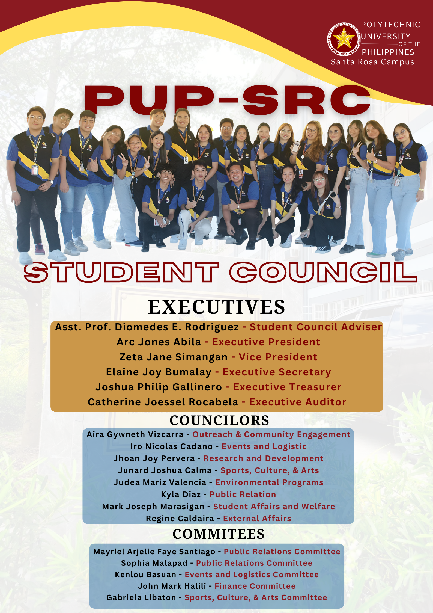

PUP-SRB Student Council
The Council of the Polytechnic University of the Philippines (PUP) is a student-led organization that represents the interests and concerns of the university's diverse student body. It serves as a bridge between students and the university administration, advocating for student rights and promoting student welfare. The council organizes a variety of activities and events throughout the academic year, including academic seminars, community service projects, and cultural events. Through these initiatives, the council aims to enrich the student experience and foster a sense of community on campus. Additionally, the Student Council plays a key role in facilitating communication between students and faculty, ensuring that student voices are heard in university decision-making processes. Here are the members of the council:
